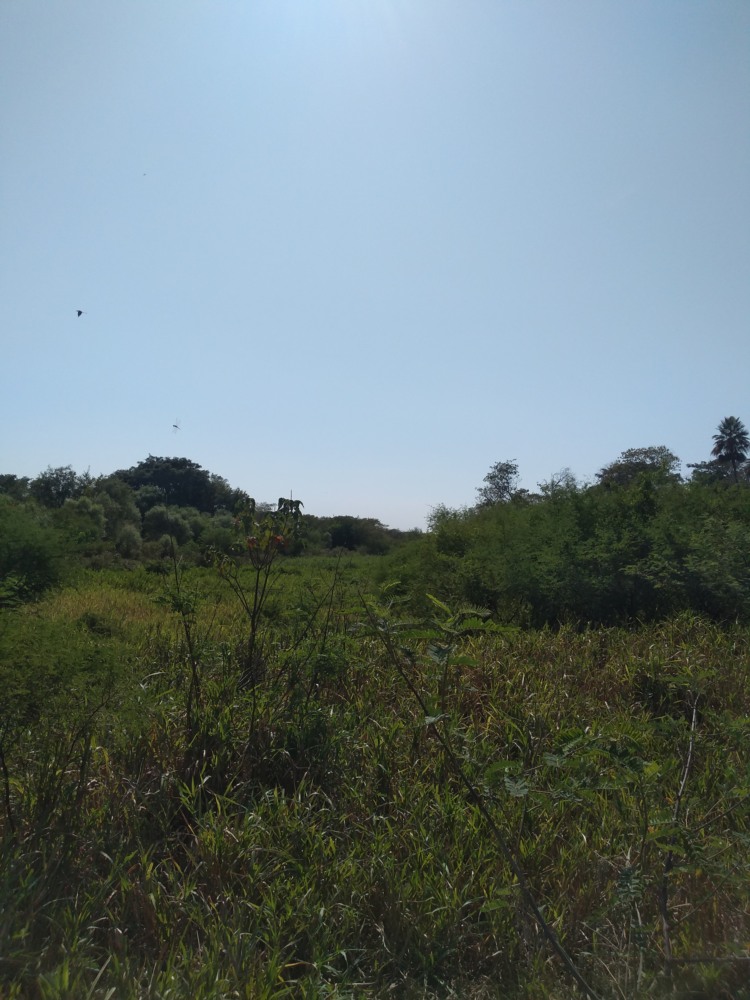

Proyecto de Limpieza del Riaco Araza
Con este proyecto se intentaba habilitar el ultimo tramo de descarga del Riacho Arazá al Rio Paraná, reactivando el cauce original del mismo.
La cantidad de dificultades que tengo para aprender esto son espantosas; será por la edad, será por incapacidades particulares, será por no entender idioma o no entender el razonamiento lógico de esto, eso que recurri bastante al chat gpt para corregir algunos errores; pero lo cierto es que se me hace que nunca voy a llegar a poder realizar por mi mismo una presentacion de este tipo; se me hace. Siempre estoy pensando si lo que hago está bien o está mal y es algo que realmente me perturba, porque, aunque no lo vea quizá algo este haciendo mal o quizá no sea tan malo lo que estoy haciendo. Yo creo que nadie tiene en su pensamiento el deseo de ser malo sino que, las circunstancias, las tentaciones, intereses, etc.; hacen que uno realice acciones que para su forma de pensar están mal. Incluso cuando alguien realiza una acción que para el este bien, no necesariamente, tiene que ser algo bueno para todos a los que afecta y viceversa. En los gobiernos y la sociedad en que vivimos se trata de establecer los parámetros de lo que es bueno y lo que es malo, pero siempre es algo que depende del punto de vista del intérprete y de la acción determinada a que se refiere. Actualmente (Año 2024) con el gobierno actual de orientación más bien capitalista, libertaria, de derecha o como les quieran decir, pareciera que está bien que cada uno se gane lo que merece y la acción social pasaría a ser algo injusto, porque se ve beneficiado alguien sin merecerse tal derecho y por otro lado el gobierno anterior que pensaba que la cuestión social era más importante que los derechos particulares por lo que parecía que los beneficios no se correspondían con los méritos que uno hacía para ganárselos. Las dos líneas de pensamiento son antagónicas, pero quien es uno para decir que el otro es malo o bueno por tener ideas contrarias a las propias. Esto se lo puede llevar a cualquier escala sea doméstica, local, regional o internacional y en todos los casos nos encontraríamos en el mismo dilema. Para todo, lo que para mí resulta la principal causa de que una acción es buena o mala es la intención con que se hace. Aunque por ahí puede que la acción que estoy realizando sea equivocada o quizá sea una mala acción, hay que entender cuál es la intención con que se la realiza y, lo que termina siendo seguro, es que todas las acciones cuando son extremas terminan siendo malas, por más que hayan sido pensadas con un buen fin y cuando a una buena acción se la utiliza para un fin indeseado se termina tergiversando la idea y termina siendo mala la misma.
En el caso puntual de porque no me considero una persona mala voy a mencionar los argumentos con los cuales alego semejante consideración. En general soy una persona de muy mal lenguaje (uso muchas palabras que se pueden considerar groseras) pero generalmente no las uso con ánimo de ofender sino con un sentido que intenta ser simpático y aparentemente con un tono de voz alto; generalmente esto lo hago en círculos de confianza, cuando estoy en ambientes desconocidos generalmente soy tímido e introvertido en exceso; generalmente cuando mi intención es ofender no necesariamente uso palabras groseras.
Creo mucho en los valores de mi conciencia, me considero una persona honesta y en general actúo considerando lo que está bien de acuerdo a lo que me dicta la conciencia. Por supuesto que los valores de lo que está bien para mi puede estar en las antípodas para otro, como el estar casado por segundas nupcias (para un católico viviría en pecado), nada cariñoso y reniego de los que lo son, no me gusta gastar en cosas que considero superfluas, considero a los animales como tales y no me gusta que los consideren parte de la familia, no me preocupo mucho por el cuidado del ambiente hasta cierto punto, despotrico contra casi todo y es casi seguro que cuestione cualquier afirmación de cualquier tema independientemente de que conozca o no del mismo; pero en general no le falto el saludo a nadie, casi siempre estoy predispuesto a ayudar y no le guardo rencor a nadie porque no considero a nadie, sino a mí mismo, responsable de mi destino.
Me gusta mucho hacer cosas en mi casa utilizando cosas de descarte, asi por ejemplo una vez construi una casa arriba de un arbol en el fondo de mi casa con tablas de tarimas usadas como un lugar para entretenimiento de mis hijos que en ese momento eran chicos.
Con este proyecto se intentaba habilitar el ultimo tramo de descarga del Riacho Arazá al Rio Paraná, reactivando el cauce original del mismo.
Con este proyecto se intentaba proveer de agua a lugares donde las lluvias son esporadicas y no tienen acceso a redes de agua.
Con estos tipos de proyectos se intentaba mejorar el aspecto de funcionamiento de las lagunas como pulmones de almacenamiento de agua en períodos de grandes precipitaciones y mejorar el aspecto ambiental de las mismas, ya que por encontrarse en zonas urbanas del AMGR, el saneamiento de las mismas mejoraria el aspecto paisajistico e higiénico de la zona.
En el año 2012 se realizó la limpieza del Tramo final del Rio Negro; desde el Puente Bergaño hasta su desembocadura al Rio Tragadero, en el Dique regulador del Rio Negro. Esta tarea se realizo en varios tramos, los cuales se les asignaron a distintas empresas del medio. En esta presentacion se muestra el informe de la limpieza del tramo que va desde el Puente de Ruta Nacional Nº 11 hasta Jaula de los monos en la zona cercana al barrio Santa clara; lo que corresponde a una longitud total de 7.100.00 metros, aproximadamente.
Esta obra se realizó con el objeto de permitir el acceso de las embarcaciones que traen combustible a la Planta de YPF, para ser distribuido en toda la zona NE de da la República. En periodos en los que el Rio se encuentra con bajo nivel, las embarcaiones no puede acceder al muelle debido al poco calado y además, el sedimento se deposita en lugares donde existe un obstaculo, como lo es la estructura del muelle. Este tipo de obra se realiza cada cierto tiempo, dependiendo del regimen del rio y de la opertatividad del muelle en cuestión.
El Riacho Araza, en el sector que atraviesa la localidad de Fontana, resulta el principal sistema de descarga de las aguas superficiales de la zona sur de la localidad, descargando al conducto de Ruta Nacional Nº 11 y de alli continuar por otros sistemas. Al ser un curso de zona llana con una velocidad de escurrimiento muy lenta, es propenso a: sedimentacion, crecimiento de vegetacion y a todo eso se le suma el arrojamiento de basura urbana y otros materiales. Por tal motivo periodicamente debe ser saneado para restituir su capacidad de escurrimiento.